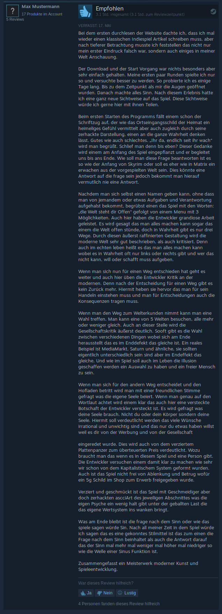

Unser Produkt
Unser Produkt ist ein Revolution in der Spiel Geschichte. Es handelt sich hierbei nicht nur um ein einfaches Spiel das nur die Konsole benutzt. Ganz im Gegenteil. Es ist der Smetterlingsschlag am Ende der Welt der dazu beisteuert das sich woanders das Wetter ändert. Durch Simplizität und die einfachen Zeichenfolgen versuchen wir sie in eine Welt mitzunehmen. Wir versprechen ihnen: Sie machen eine Erfahrung die sie noch nie zuvor hatten. Sie Tauchen ein in eine asciitatische Welt ein und hinterfragen sich oft selbst sowie auch den Code. Und auf dieser Reise die wie die Suche nach dem Ursprung des Niels sie immer mehr fordert, sie in immer tieferes Hinterland drängt und sie sich mit Selbstzweifeln auseinander setzen müssen. Ist wie so oft, der Weg das Ziel.
Die Suche nach dem Sinn.
Vor und Nachteile unseres Produktes
Warum sollten sie sich für unser Produkt entscheiden? Die viel wichtigere Frage ist eher, warum sollte ich mich dagegen entscheiden? Nun ja wenn man Glücklich ist, alle Sorgen des Lebens bekämpft hat und an sich die Weisheit mit Löffeln verzehrt hat ist es nicht existenziell unser Produkt probiert zu haben. Jedoch kann selbst in einer so erfüllten Lebenslage der Gebrauch unseres Produkts nützlich sein. Denn nur wenn man weiß was Unglück ist kann man auch wissen was Glück ist.
Technische Daten:
Das Lesen dieses Abschnittes ist auf eigene Gefahr. Der folgende Absatz kann ihre Spielerfahrung sehr ernüchtern und sollte niemals vor der Benutzung unseres Produktes gelesen werden.
Konkret Handelt es sich bei Textandanture – Die Suche nach dem Sin um ein simplifiziertes und objektifiziertes Spiel was den Spieler ein ganz bestimmte Erfragung bringen soll. Technisch gesehen ist das spiel ein Textadvanture was, genauer eine Python Konsolen Anwendung ist. Die Entwicklung des Spiels startete ende Mai 2020 unter dem Decknamen „LEKOFNI“ und wurde am 15 Juni 2020 von dem Entwicklerstudio „Bendix und Oscar“ released.
Unsere Philosophie
Wir sind das „Bendix und Oscar Studio“. Unser Täglicher Ansporn ist etwas zu schaffen das bleibt, das zum denken anregt und Sin. Wir haben mit der Gründung unseres Studios „Bendix und Oscar Studio“ uns einen großen Traum erfüllt. Wir wollen die Spiele Branche und den Sprint nach den AAA-Titeln entgegenwirken. Wir wollen zurück zu dem Wurzeln. Wir wollen das Spiele und Programme wieder dazu gemacht werden um spaß zu haben und nicht um irgendwelchen Anforderungen oder Zahlen zu erfüllen. Ob wir das schaffen oder nicht. Weiß nur der Schmetterling am anderen Ende der Welt
Das sagen Unsere Kunden
